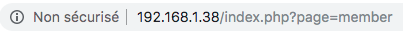
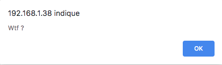
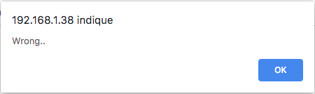
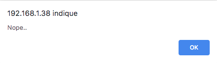

Recuperation du fichier /etc/passwd du serveur
Exploitation de la faille :
Etape 1 :
On peut voir dans l'url que l'on peut inclure une page avec ici ?page=member
Etape 2 :
On teste avec un site au hasard pour voir si un peut injecter du code venant dun autre site

Etape 3 :
Comme cela ne fonctionne pas on test de recuperer le fichier etc/passwd


Etape 4 :
Comme le message d'erreur change on continu a remonter dans les dossiers

Etape 5 :
a chaque fois on ajoute ../ devant

Etape 6 :
Et finalement on fini par le trouver

Protection de la faille :
Faire un system de route pour ne pas pourvoir acceder a des fichiers non voulus